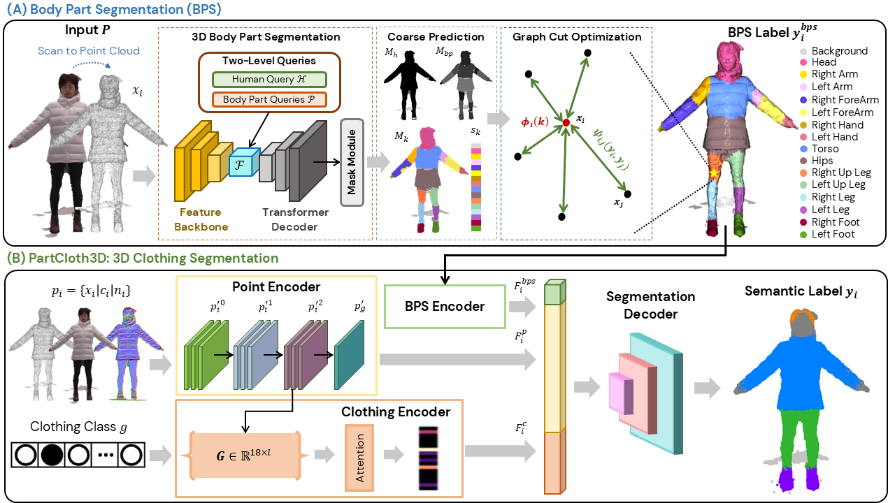

PartCloth3D: Point Cloud Clothing Segmentation using Body Part Priors
Abstract
Accurate 3D clothing segmentation is essential for fashion, entertainment, and animation applications. Existing methods can generally be categorized into multi-view projection-based and point-based methods. Multi-view methods are sensitive to occluded pose and take longer inference times due to repeated image rendering and back-projection to 3D. Point-based methods are often either limited to coarse garment categories or rely on parametric body model registration. To address these limitations, a point cloud segmentation network named PartCloth3D is proposed to segment 3D clothing using body part priors. It predicts 15 semantic body parts and the background from the scan geometry, with graph cut optimization subsequently recovering missing regions. The refined body parts are encoded as body prior and fuse with point and clothing features to estimate per-point clothing labels. Experiments on the CTD and THuman2.0 datasets demonstrate improved body part segmentation across diverse clothing styles and human poses. It is also capable of identifying background points to isolate human scans from surrounding noise and produce more consistent clothing segmentation. The performance of PartCloth3D is compared with the multi-view 4D-DRESS and point-based CloSe-Net baselines using IoU, DSC, LPIPS, and SSIM. PartCloth3D performs best across all four metrics and achieves the highest IoU of 0.895, representing gains of 10.3 and 3.0 percentage points over 4D-DRESS and CloSe-Net.
Method

PartCloth3D works in two stages.
(A) Body Part Segmentation (BPS). A feature backbone and transformer decoder with two-level queries (a human query and body part queries) produce coarse human, body part and background masks directly from the scan geometry. Graph cut optimization then refines this coarse prediction and recovers missing regions, giving a per-point label for 15 semantic body parts plus background.
(B) 3D Clothing Segmentation. Each point carries its position, colour and normal. A point encoder extracts geometric features, a BPS encoder turns the refined body part labels into a body prior, and a clothing encoder applies attention over the garment classes present in the scan. The point featurs, body part features, and clothing features are fused and passed to the segmentation decoder that predicts the clothing label of every vertices.
BibTeX
@article{fung2026partcloth3d,
title={PartCloth3D: Point Cloud Clothing Segmentation using Body Part Priors},
author={Fung, Yi Wei and Lim, King Hann and Phang, Jonathan Then Sien},
journal={TO BE CONFIRMED},
year={2026}
}